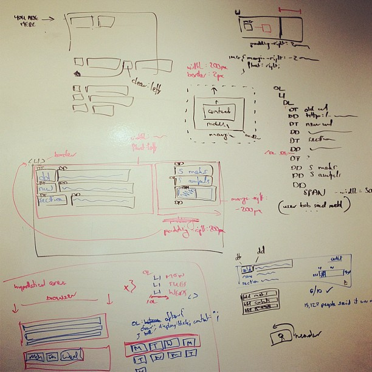

Please hold… rebuild in progress (find out more)
 Hello world.
Again.
I'm rebuilding my site.
Take a moment to look at the previous version of it in the wayback machine. Note two things:
I hadn't posted anything since August 2015. And I'm writing this in June 2020, almost five years later.
I had had this idea to collect things such as tweets, Foursquare checkins, instagram posts, etc that otherwise end up invisible and unfindable on the web. That part I hadn't continued with since 2011.
Also, the site has been offline most of this year after I shut down the host that was serving it.
Now, with time on my hands and more importantly some degree of motivation (completely missing for most of the Covid-19 lockdown) I'm going to reimplement my site.
I still like the idea of collecting some of those things, but definitely not all.
And I have more words to write.
Site mechanism:
Old posts:
Instagram:
Twitter: (I'm not going to import every single tweet)
@norms_ps4 accountOther data:
❌ Then do everything else...